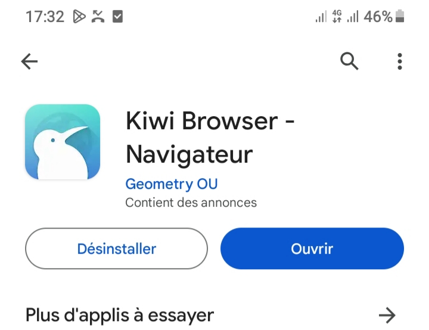
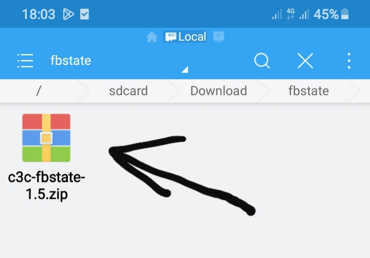
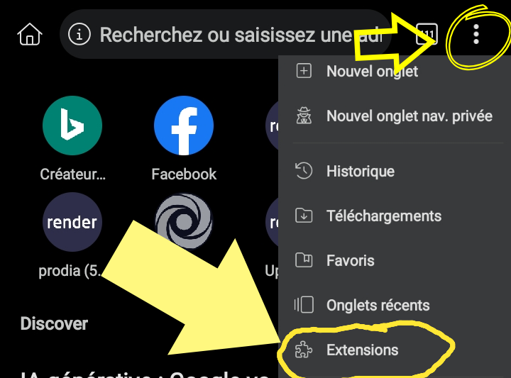
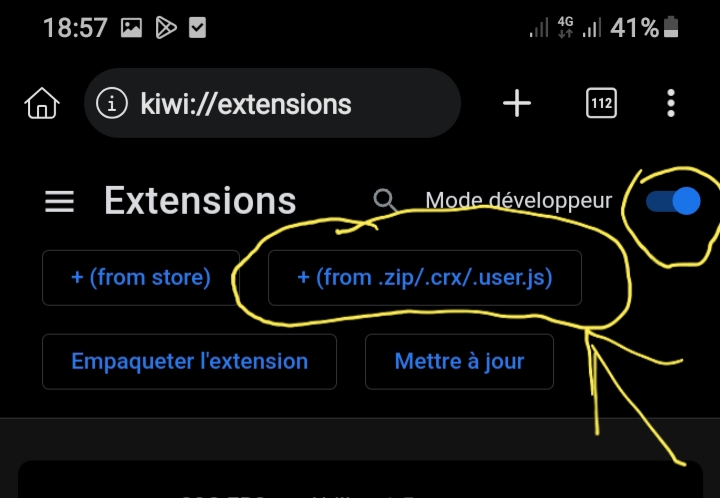
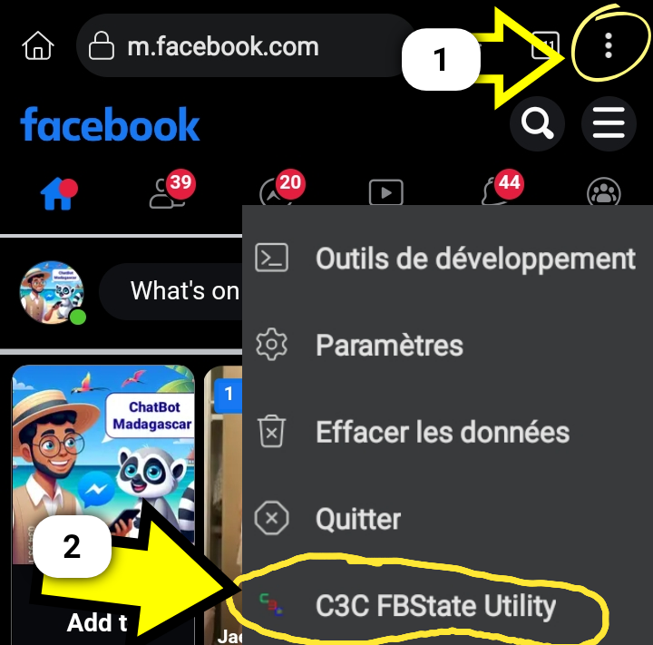
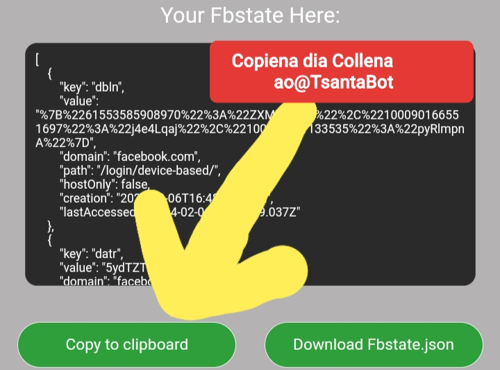
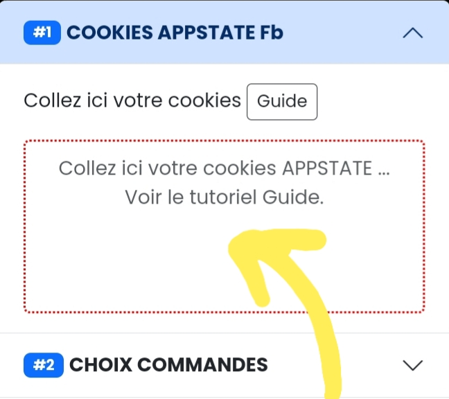
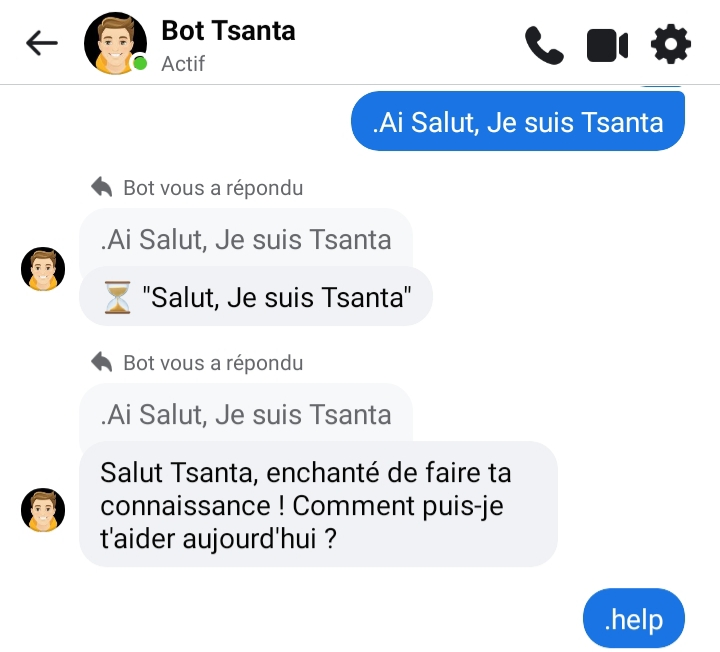

GUIDE ÉTAPE PAR ÉTAPE
Etape1 Installez l'application KIWI BROWSER sur Google Playstore.
Étape2 Téléchargez aussi le fichier extension c3c-fbstate-1.5.zip Télécharger ici
Étape3 Après avoir téléchargé « Kiwi Browser » et « fbstate », ouvrez l'application Kiwi Browser, puis cliquez sur l'icône 3 points ... en haut à droite. Cliquez ensuite sur : "Extensions"
Étape4 Activez le "mode développeur". Cliquez ensuite sur "+(from .zip)". Recherchez et sélectionnez ensuite le fichier "c3c-fbstate-1.5.zip" dans votre dossier Téléchargement
Étape5 Ouvrez votre compte Facebook (recommandation : utiliser un nouveau compte) dans l'application kiwi, une fois connecté, sélectionnez les 3 points... en haut à droite. Sélectionnez ensuite "C3C FBState Utility".
Étape6 COPIEZ votre Appstate, veuillez revenir à TsantaBot et COLLEZ l'Appstate cookies à l'emplacement spécifié.
Étape7 Collez ici votre Facebook Appstate pour démarrer le Chatbot sur votre compte Facebook.
Étape8 Sélectionner les commandes que vous voulez utiliser sur votre Chatbot Facebook.
Entrez ensuite votre ID FACEBOOK si vous voulez être Admin de ce Chatbot. Laissez-le vide si vous ne souhaitez pas un admin de ce compte.
Étape9 (Optionnel) Vous pouvez ajouter un prefix pour votre Chatbot comme (#$%@!^&*()+×÷=/_€£¥₩-'":;,?,.)
Laissez-le VIDE si vous ne souhaitez pas utiliser le prefix.
Lisez attentivement les termes et conditions générales avant de cocher cette case. Cliquez sur DÉMARRER puis envoyez un message à votre compte Facebook Chatbot.
Étape10 Votre Chatbot est désormais prêt à être utilisé. Les amis de ce compte peuvent utiliser le Chatbot..
NOTE Accéder au compte du bot peut entraîner une interruption du service. Il est vivement recommandé de ne pas essayer d'accéder au compte du bot afin de maintenir la fonctionnalité continue du chatbot.
Si le chatbot ne répond pas, veuillez revenir sur ce site web, puis refaire l'étape5 jusqu'à l'étape10.
Contactez l'administrateur sur Facebook si vous avez besoin d'aide. Ou trouvez également notre guide sur Chatbot Madagascar